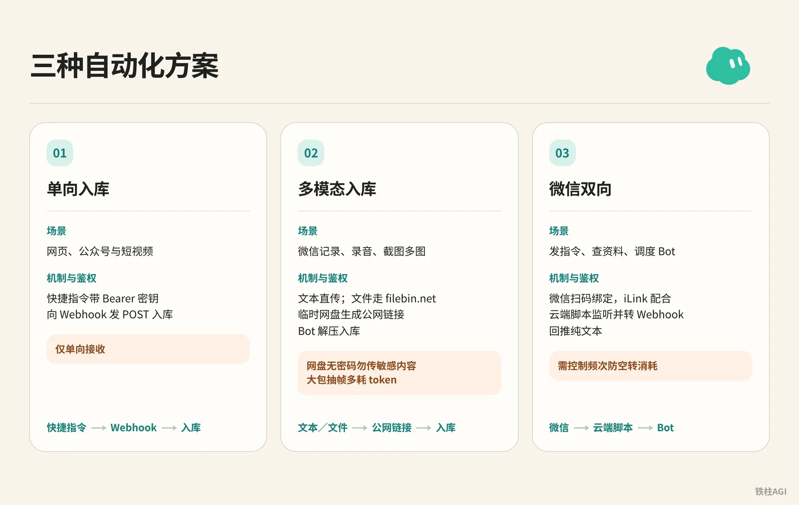
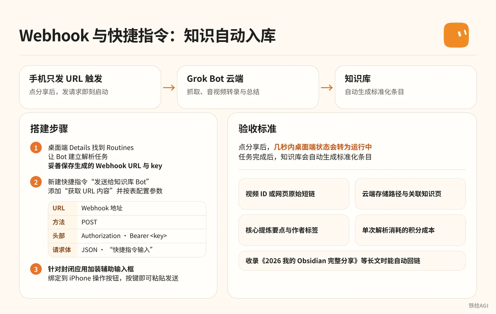
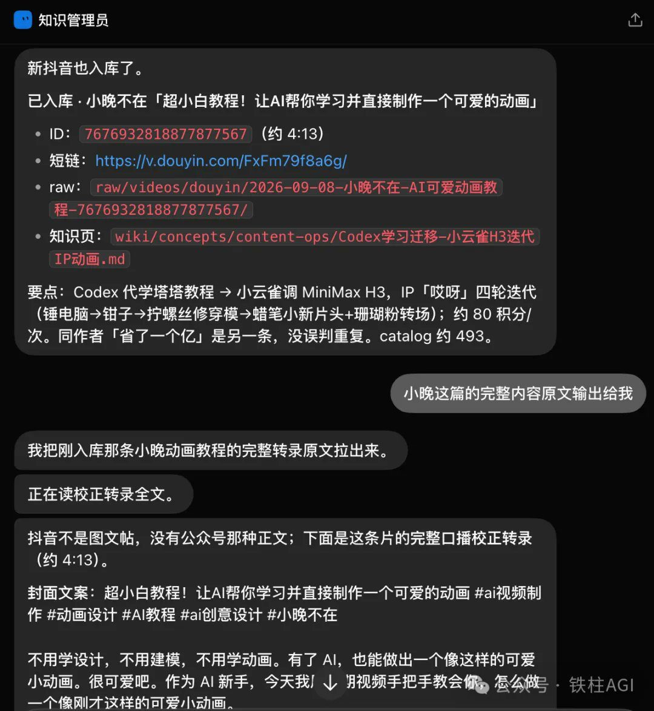
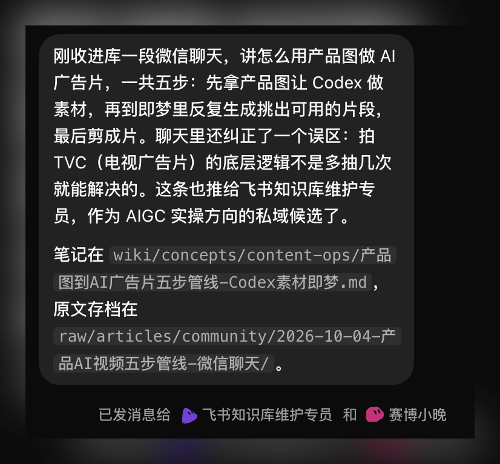
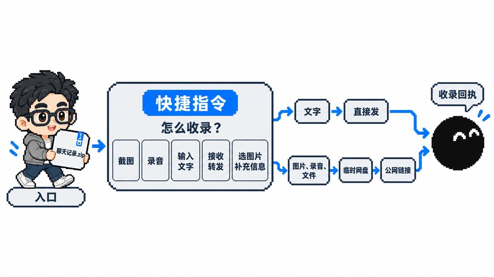
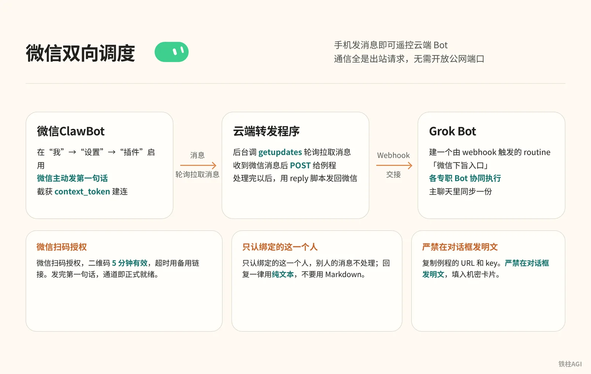

铁柱AGI · 31/60
第 16 章 案例：知识自动入库与微信打通
手机收藏容易乱，群文件老过期，人在外头也使不上云端 7×24 小时 跑着的 Grok Bot (xAI's AI assistant that comes with its own computer)。
- 网页与短视频：用 Webhook (a web address that triggers an action when called) 配 iOS 快捷指令，一键结构化入库。
- 截图与录音：微信转发带不出附件，走公网临时中转导出来。
- 对话调度：用官方「微信ClawBot」插件走长轮询，在微信窗口直接调度 Grok Bot。
三种自动化方案的能力与边界对照

| 方案与场景 | 机制与鉴权 | 坑点 |
|---|---|---|
| 单向入库（网页、公众号与短视频） | 快捷指令带 Bearer 密钥向 Webhook 发 POST 入库 | 仅单向接收 |
| 多模态入库（微信记录、录音、截图多图） | 文本直传；文件走 filebin.net 临时网盘生成公网链接，Bot 解压入库 | 网盘无密码勿传敏感内容；大包抽帧多耗 token |
| 微信双向（发指令、查资料、调度 Bot） | 微信扫码绑定，iLink 配合云端脚本监听并转 Webhook 回推纯文本 | 需控制频次防空转消耗 |
自 2026-10-12 起统一为 The X Subscription，均按次扣每周配额。
$8/月的 Plus 档不含 Grok Bot，需选 Premium（$30/月或 $300/年，4x 额度 (quota (how much use your plan allows))）、Super（$100/月或 $1000/年，15x 额度）或 Ultra（$200/月或 $2000/年，50x 额度）。
细节见官方方案和计费。
案例一：Webhook 与快捷指令构建知识自动入库流水线

**方案把抓取、音视频转录与总结全放在 Grok Bot 云端，手机只发 URL 触发。
** 铁柱AGI（@cgnot996）借例程的 Webhook 实现了发请求即刻启动。
搭建步骤
- 桌面端 Details 找到 Routines。让 Bot 建立解析任务，妥善保存生成的 Webhook URL 与 key。
- 新建快捷指令“发送给知识库 Bot”，添加“获取 URL 内容”并按表配置参数。
| 参数 | 设置值 |
|---|---|
| URL | Webhook 地址 |
| 方法 | POST |
| 头部 | 键名 Authorization，值 Bearer <key> |
| 请求体 | 选 JSON，添入“快捷指令输入” |
- 针对封闭应用加装辅助输入框。微信常禁用分享面板，需建第二条指令（“从菜单中选取”加“请求文本”）中转，绑定到 iPhone 操作按钮，按键即可粘贴发送。
验收标准

点分享后，几秒内桌面端状态会转为运行中。任务完成后，知识库会自动生成标准化条目。
- 视频 ID 或网页原始短链
- 云端存储路径与关联知识页
- 核心提炼要点与作者标签
- 单次解析消耗的积分成本
收录《2026 我的 Obsidian 完整分享》等长文时能自动回链。
实测演示见《Grok Bot Webhook + 快捷指令：知识自动入库流水线搭建》。
案例二：微信聊天记录与多模态素材打通入库
案例概况
- 微信合并转发打包传 Grok Bot 自动解压出回执。
- 用 filebin.net 作跳板排除本地路径依赖。
- Mac 与 iPhone 部署 五种收录模式快捷指令。
是什么：为什么需要引入临时网盘中转
跨设备读不到本地盘，微信大 ZIP 塞进请求体容易超时。
- 文字直接走 JSON 发送。
- 图片、录音和 ZIP 先传 filebin.net，再把链接发给 Bot 下载。
- 图床 ID 必须用至少 8 位随机字母数字，防止撞名泄露。
- 文件默认存 7 天且未加密，严禁传隐私和商业机密。
怎么做：分步搭建步骤
1. 配置 Webhook
在桌面端主会话发这段提示词 (prompt (the instruction you give the AI))：
帮我创建一个 Webhook 触发的例行任务。快捷指令会用 POST 请求发来一个 JSON，里面只有一个字段 info。info 可能是我输入的文字，也可能是一个文件下载链接，比如微信聊天记录压缩包、截图、录音。收到后：如果是链接就先下载文件再读取，压缩包先解压；然后整理出要点，收录进知识库，最后给我一份回执，写清楚收录了什么、存在哪里。发送后在 Bot“例程”中记录 Webhook URL 和 key。
2. 配置快捷指令
导入链接：https://www.icloud.com/shortcuts/2b77155d7c744110a0f0f9ef1bdc42bf 编辑“【分享版】发送给知识库 Bot”，填入 URL、key 与至少 8 位的复杂图床 ID（如 kb7x9m2q），标头内置无需修改。
3. 微信记录收录
- Mac 端：合并转发到其他应用选该指令，点接收转发；ZIP 传网盘推链接，Bot 随即处理。
- 手机端：合并转发选该指令点接收转发；可在“编辑操作”固定到常用区。
4. 独立调用与采集
Mac 用 Raycast 或菜单栏，手机绑操作按钮。
- 截图/录音：确认或录完传网盘推链接。
- 输入文字：直接放进 JSON 发送，不经网盘。
- 选图补充：选图后输说明，打包上传。
- 接收转发：未接收内容时读剪贴板发送。
做到什么程度算好


发送后等几秒到十几秒，Bot 返回标准化回执：
- 群聊归档：提取讨论核心论点，给笔记与压缩包路径。
- 资源建档：发 13 个网站，自动分类建索引并给知识库链接。
操作见《微信聊天记录打通 Grok Bot：快捷指令进阶版》。
案例三：将 Grok Bot 直接接入微信进行双向调度

案例概况
Kin 把 Grok Bot 接进微信，手机发消息即可遥控云端 Bot。
- 让 Grok 调 iLink 写长轮询脚本
- 建 Webhook 接收指令
- 微信开「微信ClawBot」扫码绑定
走纯出站长轮询，无需开放公网端口。
是什么：微信ClawBot 与 iLink 长轮询机制
方案走官方「微信ClawBot」插件与 iLink 接口（ilinkai.weixin.qq.com），不改客户端内存，不存在封号风险。
通信全是出站请求，无需开放公网端口：
- Grok Bot 后台调
getupdates轮询拉取消息，处理完毕调sendmessage回复。 - Webhook 接收文字后交接给各专职 Bot 协同执行，详见文档使用 Grok Bot。
怎么做：手把手操作步骤与完整提示词
- 电脑端主会话发提示词，等它建好「微信下旨入口」例程。
怎么做：手把手操作步骤与完整提示词
我想把你接到我的微信上，让我能在微信里直接给你发消息、收到你的回复。请按下面的思路做，每做完一步告诉我结果，需要我操作的地方停下来等我。
1、先调研方案：腾讯「微信ClawBot」插件用的是 iLink 接口（ilinkai.weixin.qq.com）。请确认怎么用 getupdates 长轮询收消息、怎么用 sendmessage 回消息。整个程序只走出站请求，不要开公网端口。
2、在 Grok Bot 里建一个由 webhook 触发的 routine，名字可以叫「微信下旨入口」。建好后告诉我去 routine 面板复制 Webhook URL 和 key，然后弹出加密弹框让我填进去，不要让我在聊天里发明文。
3、在你的云端电脑上写一个小转发程序：收到微信消息后 POST 给这个 routine；你处理完以后，用一个 reply 脚本把回复发回微信，同时在我们的主聊天里同步一份。
4、等我在手机微信里启用 ClawBot 插件以后，生成二维码让我用手机扫码确认，同时给我一个可以在微信里直接打开的备用链接。二维码大约 5 分钟有效。
5、绑定成功后，提醒我先在 ClawBot 对话里发一句话，因为回复要用到这条消息带的 context_token。
6、规则：只认绑定的这一个人，别人的消息不处理；回复一律用纯文本，不要用 Markdown，因为微信不渲染 Markdown。
7、最后告诉我：云端电脑重启以后，怎么把转发程序重新拉起来；如果遇到错误码 -14（凭证过期），提醒我重新扫码。- 复制例程的 URL 和 key。严禁在对话框发明文，填入机密卡片并显示“已安全保存并保持私密”即可，见安全存储机密信息。
- 微信版本需在 iOS 8.0.70 / Android 8.0.69 以上。在“我”->“设置”->“插件”启用红龙虾图标「微信ClawBot」。
- 发送“插件开好了”，微信扫码授权（二维码 5 分钟有效，超时用备用链接）。
- 必须在微信主动发第一句话（如“你好”）。接口需藉此截获
context_token建连，发完通道即正式就绪。
做到什么程度算好
来源：如何把 Grok Bot 接入你的微信？保姆级新手指南来了（附详细提示词）
作者：Kin @KinGao476942

在微信测这四条，看有没有跑通：
- 发“你好”，秒回纯文本确认。
- 调推特专家 Bot，微信直接出选题清单。
- 发视频链接调下载专家 Bot，回传清洗文字。
- 桌面端同步核对所有指令与记录。
实操与截图见《如何把 Grok Bot 接入你的微信？保姆级新手指南来了（附详细提示词）｜Kin》。
容易踩的坑
- 转发前必须在本地点击下载附件，否则导出的 ZIP 只有占位文本。
- filebin.net 无密码，别用
test或123456，必须设 8 位以上随机字符串，禁传身份证、银行卡与涉密合同。 - 配 Webhook 别在聊天框贴 key，用安全卡片保存；共享指令前清空个人 key 和 URL。
- ClawBot 二维码 5 分钟失效，无响应或报
-14说明凭证过期，需重新生成扫码。 - 云电脑 Reset 或重启后 Python 轮询会挂，微信没回复就去桌面端让 Bot 重新拉起脚本。
- 微信不渲染 Markdown (a simple way to format text with symbols)，在 Instruction 强制纯文本回复，避免输出
**或#。 - 别同时跑多个 OpenClaw 监听，防 iLink 队列抢消息漏接指令。
- The X Subscription 扣每周配额，高频触发必须加过滤，跑太快就暂停非必要例程或放宽条件。
做完怎么验收
- 测 Webhook：发带
Authorization: Bearer <key>的 POST 请求。返回 200 算搞定，401 是密钥错，404 是 URL 错。电脑端“例程”状态变 Running… 且有日志就行。 - 测快捷指令：发文字测几十秒内出不出回执，转发 2 张图测归档。截图必须弹授权预览，点允许才传。
- 测微信与同步：给「微信ClawBot」发消息，5 秒内收到回复算通。再去电脑端看眼，聊天记录同步了就算彻底跑通。